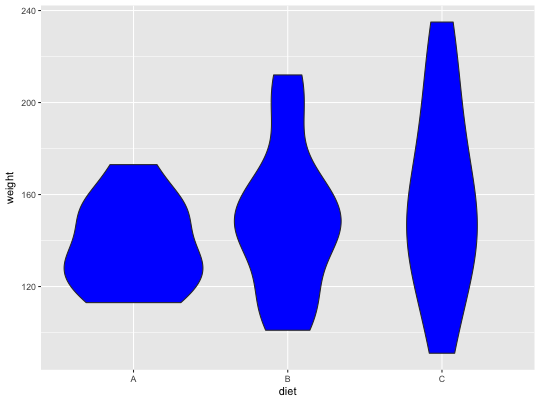

In a weight loss study on obese cats, overweight cats were randomly assigned to one of three groups and boarded in a kennel. In each of the three groups, the cats' total caloric intake was strictly controlled (1 cup of generic cat food) and monitored for 10 days. The difference between the groups was that group A was given 1/4 of a cup of cat food every six hours, group B was given 1/3 a cup of cat food every eight hours, and group C was given 1/2 a cup of cat food every twelve hours. The weights of the cats at the beginning and end of the study were recorded, and the difference in weights (grams) was stored in the variable Weight of the data frame FCD.
FCD
A data frame with 36 observations on the following 2 variables:
weight (difference in weight (grams))
diet (a factor with levels A, B, and C)
Ugarte, M. D., Militino, A. F., and Arnholt, A. T. 2015. Probability and Statistics with R, Second Edition. Chapman & Hall / CRC.
# checking.plots()? p <- ggplot(data = FCD, aes(x = diet, y = weight)) p + geom_violin(fill = "blue")aov(weight ~ diet, data = FCD)#> Call: #> aov(formula = weight ~ diet, data = FCD) #> #> Terms: #> diet Residuals #> Sum of Squares 2460.43 36871.12 #> Deg. of Freedom 2 33 #> #> Residual standard error: 33.42614 #> Estimated effects may be unbalanced